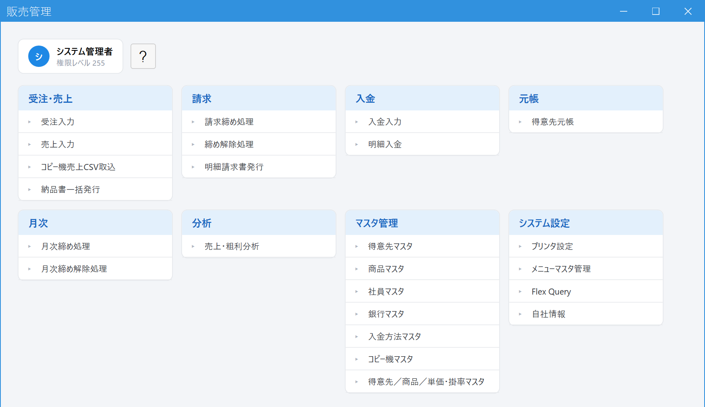

受注・売上・請求・入金・元帳・月次締め。
販売にかかわる一連の業務を、ひとつのシステムでつなぎます。
締め日でまとめて請求する企業さまも、納品ごとに請求する官公庁・学校さまも、
それぞれの業務の流れのままお使いいただけます。

締め請求と都度の明細請求を、取引先ごとに使い分けられます。
税率ごとの対価・消費税額を記載し、再発行しても同じ金額を再現します。
担当者別・得意先別・商品別に、月ごとの売上と粗利を集計できます。
| 締め取引（一般企業） | 都度取引（官公庁・学校など） | |
|---|---|---|
| 請求 | 20日締め・末日締めなど、締め日ごとに1か月分の売上をまとめて請求書を発行 | 納品1件〜数件ごとに明細請求書を発行。売上入力時の即時発行も、後でまとめての発行も可能 |
| 入金 | 締め単位でまとめて消込 | 明細（伝票）単位で消込 |
| 宛名 | 得意先マスタの宛名で発行。複数の得意先をまとめて1つの請求書にする「請求集約」にも対応 | 学校のクラス・先生など、得意先とは別の宛名を都度指定可能 |